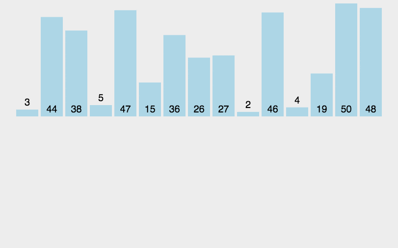
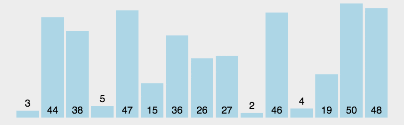

- 排序算法比较：
| 排序算法 | 平均时间复杂度 | 最好情况 | 最坏情况 | 空间复杂度 | 排序方式 | 稳定性 |
|---|---|---|---|---|---|---|
| 冒泡排序 | O(n^2) | O(n) | O(n^2) | O(1) | 内部排序 | 稳定 |
| 选择排序 | O(n^2) | O(n^2) | O(n^2) | O(1) | 内部排序 | 不稳定 |
| 插入排序 | O(n^2) | O(n) | O(n^2) | O(1) | 内部排序 | 稳定 |
| 希尔排序 | O(nlogn) | O(nlog^2n) | O(nlog^2n) | O(1) | 内部排序 | 不稳定 |
| 归并排序 | O(nlogn) | O(nlogn) | O(nlogn) | O(n) | 外部排序 | 稳定 |
| 快速排序 | O(nlogn) | O(nlogn) | O(n^2) | O(logn) | 内部排序 | 不稳定 |
| 堆排序 | O(nlogn) | O(nlogn) | O(nlogn) | O(1) | 内部排序 | 不稳定 |
| 计数排序 | O(n+k) | O(n+k) | O(n+k) | O(k) | 外部排序 | 稳定 |
| 桶排序 | O(n+k) | O(n+k) | O(n^2) | O(n+k) | 外部排序 | 稳定 |
| 基数排序 | O(n+k) | O(nxk) | O(nxk) | O(n+k) | 外部排序 | 稳定 |
1.1 选择排序
- 选择排序一种简单直观的排序算法，无论什么数据进去都是 O(\(n^2\)) 的时间复杂度。所以用到它的时候，数据规模越小越好。唯一的好处可能就是不占用额外的内存空间了吧。
- 算法步骤：
- 首先在未排序序列中找到最小（大）元素，存放到排序序列的起始位置
- 再从剩余未排序元素中继续寻找最小（大）元素，然后放到已排序序列的末尾。
- 重复第二步，直到所有元素均排序完毕。
- 演示：

void selection_sort(int n)
{
for (int i = 0; i < n - 1; i++)
{
int min = i;
for (int j = i + 1; j < n; j++)
{
if (x[j] < min)
{
min = j;
}
}
if (min != i)
{
swap(x,i,min);
}
}
}
1.2 插入排序
- 插入排序的代码实现虽然没有冒泡排序和选择排序那么简单粗暴，但它的原理应该是最容易理解的了，因为只要打过扑克牌的人都应该能够秒懂。插入排序是一种最简单直观的排序算法，它的工作原理是通过构建有序序列，对于未排序数据，在已排序序列中从后向前扫描，找到相应位置并插入。 插入排序和冒泡排序一样，也有一种优化算法，叫做拆半插入。
- 算法步骤：
- 将第一待排序序列第一个元素看做一个有序序列，把第二个元素到最后一个元素当成是未排序序列。
- 从头到尾依次扫描未排序序列，将扫描到的每个元素插入有序序列的适当位置。（如果待插入的元素与有序序列中的某个元素相等，则将待插入元素插入到相等元素的后面。）
- 演示：

void insertion_sort(int n)
{
for (int i = 1; i < n; i++)
{
int t = x[i];
int j;
for (j = i; j > 0 && x[j-1] > t ; j--)
{
x[j] = x[j-1];
}
x[j] = t;
}
}
1.3 希尔排序
- 希尔排序，也称递减增量排序算法，是插入排序的一种更高效的改进版本。但希尔排序是非稳定排序算法。 希尔排序是基于插入排序的以下两点性质而提出改进方法的：
- 插入排序在对几乎已经排好序的数据操作时，效率高，即可以达到线性排序的效率；
- 但插入排序一般来说是低效的，因为插入排序每次只能将数据移动一位； 希尔排序的基本思想是：先将整个待排序的记录序列分割成为若干子序列分别进行直接插入排序，待整个序列中的记录“基本有序”时，再对全体记录进行依次直接插入排序。
void shell_sort(int n)
{
for (int inc = n/3; inc >= 1; inc /= 3)
{
for (int i = inc; i < n; i++)
{
int t = x[i];
int j;
for (j = i; j>= inc && x[j-inc] > t; j-= inc)
{
x[j] = x[j - inc];
}
x[j] = t;
}
}
}
1.4 冒泡排序
-
算法步骤：
- 比较相邻的元素。如果第一个比第二个大，就交换他们两个。
- 对每一对相邻元素作同样的工作，从开始第一对到结尾的最后一对。这步做完后，最后的元素会是最大的数。
- 针对所有的元素重复以上的步骤，除了最后一个。
- 持续每次对越来越少的元素重复上面的步骤，直到没有任何一对数字需要比较。
-
动图演示：

void bubble_sort(int n)
{
bool change = true;
for (int i = n-1; i >= 1 && change; i--)
{
change = false;
for (int j = 0; j < i; j++)
{
if(x[j] > x[j + 1])
{
swap(x, j, j + 1);
change = true;
}
}
}
}
1.5 快速排序
- 快速排序是由东尼·霍尔所发展的一种排序算法。在平均状况下，排序 n 个项目要 Ο(nlogn) 次比较。在最坏状况下则需要 Ο(n2) 次比较，但这种状况并不常见。事实上，快速排序通常明显比其他 Ο(nlogn) 算法更快，因为它的内部循环（inner loop）可以在大部分的架构上很有效率地被实现出来。 快速排序使用分治法（Divide and conquer）策略来把一个串行（list）分为两个子串行（sub-lists）
快速排序的最坏运行情况是 O(n²)，比如说顺序数列的快排。但它的平摊期望时间是 O(nlogn)，且 O(nlogn) 记号中隐含的常数因子很小，比复杂度稳定等于 O(nlogn) 的归并排序要小很多。所以，对绝大多数顺序性较弱的随机数列而言，快速排序总是优于归并排序。
-
算法步骤：
- 从数列中挑出一个元素，称为 “基准”（pivot）;
- 重新排序数列，所有元素比基准值小的摆放在基准前面，所有元素比基准值大的摆在基准的后面（相同的数可以到任一边）。在这个分区退出之后，该基准就处于数列的中间位置。这个称为分区（partition）操作；
- 递归地（recursive）把小于基准值元素的子数列和大于基准值元素的子数列排序； 递归的最底部情形，是数列的大小是零或一，也就是永远都已经被排序好了。虽然一直递归下去，但是这个算法总会退出，因为在每次的迭代（iteration）中，它至少会把一个元素摆到它最后的位置去。
-
演示：

void quick_sort(int l, int u)
{
if(l >= u)
return;
int m = l;
for(int i = l+1; i<= u; i++)
{
if(x[i] < x[l])
swap(x, ++m, i);
}
swap(x, l, m);
quick_sort(l, m-1);
quick_sort(m+1, u);
}
本文由 LancerStadium
创作，采用 知识共享署名4.0 国际许可协议进行许可
本站文章除注明转载/出处外，均为本站原创或翻译，转载前请务必署名
最后编辑时间为: 2023-02-18T00:05:03+08:00